DAVID G. SIMPSON
Personal Web Site
JAPAN PHOTO ALBUM: PAGE 3
| 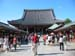 Me standing in front of the Sensō-ji temple (just to prove I was really there). |
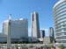 The Yokohama Landmark Tower is the tallest building in Japan, and was right next to the convention center where the Esperanto congress was being held. After returning from the tour of Tokyo, I went up the to top (69th) floor observatory. |
|
| 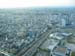 View of Yokohama, as seen from the top of the Yokohama Landmark Tower. |
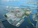 Another view from the top of the Yokohama Landmark Tower. This shows a very large Ferris wheel, easily visible from all around the harbor. The large building adjacent to the Ferris wheel is a shopping mall. |
|
| 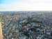 Another view of Yokohama, as seen from the top of the Yokohama Landmark Tower. Here it's near sunset. |
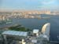 This view from the top of the tower shows the harbor. In the foreground is the convention center where the Esperanto congress was being held. The large sail-shaped building is the Yokohama Grand Intercontinental Hotel. | |
| 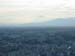 Mount Fuji, seen from the top of the Yokohama Landmark Tower. |
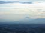 Another view of Mount Fuji. |
|
| 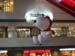 The lower floors of the Landmark Tower formed part of a large shopping mall complex. Look who I found here! There was a store here that sold anything you can imagine that's related to Snoopy. |
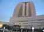 A view of the Yokohama Grand Intercontinental Hotel. The Conference Center (where the Esperanto congress was being held) is visible on the right. |
|
I thought the most interesting lecture of the Esperanto congress was a workshop on how to operate the soraban, or Japanese abacus. As part of the workshop, these students from a local soroban school demonstrated their calculating skills for us. They were really amazing. They could do a whole page of addition problems in less time than I could do one problem, and they could almost instantly multiply a three-digit number by a two-digit number. We all got to take home a very nice soroban. |
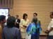 On Thursday, August 9, several of us were invited to a reception at Yokohama city hall. We were met by the vice-mayor of Yokohama (pictured here), who greeted us in Esperanto, much to our surprise. We were able to chat with her through a Japanese-Esperanto interpreter. |
{kind=link}
{kind=link}
{kind=link}
{kind=link}
{kind=link}
{kind=link}
{kind=link}
{kind=link}
{kind=link}
{kind=link}
{kind=link}
{kind=link}
| <<< Previous | Page 3 of 4 | Next >>> |
|---|
Contact Information
I may be contacted at: